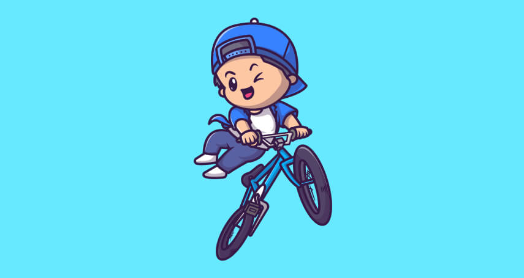

Blogs

3 August
Inspiration
The Key Factors for Success as a Developer: Embracing Continuous Learning and Resourcefulness.
Becoming a successful developer requires continuous learning and resourcefulness.
Ways to improve and extend the ideas
- Embrace a Growth Mindset: Acknowledge that challenges are part of the learning process. Instead of seeing failures as setbacks, view them as opportunities for growth and learning. Embrace a growth mindset to stay motivated and persevere through difficulties. Seek Out Diverse Resources: While learning institutions provide valuable resources, they may not cover every topic comprehensively. Seek out diverse resources such as online tutorials, blogs, coding forums, books, and video courses to gain a deeper understanding of various concepts. This approach will enhance your knowledge and skills beyond what’s taught in formal education.
- Networking and Collaboration: Connect with other developers and professionals in the field. Engage in online communities, attend meetups, and participate in hackathons. Collaborating with others can expose you to different perspectives and foster innovative ideas. Personal Projects and Open Source Contributions: Engage in personal coding projects and contribute to open-source projects. Building and working on real-life projects will help you apply theoretical knowledge and gain practical experience. Additionally, contributing to open-source projects allows you to learn from experienced developers and make a positive impact on the developer community.
- Stay Updated with Industry Trends: The tech industry is constantly evolving, and staying updated with the latest trends, tools, and frameworks is crucial for a developer’s success. Follow technology blogs, subscribe to newsletters, and attend conferences or webinars to remain current in the ever-changing landscape of software development. Practice Regularly: The more you practice coding, the more proficient you become. Set aside dedicated time for coding practice and challenge yourself with coding exercises and puzzles. Online coding platforms and coding challenges can be great resources for practice.
- Mentorship: Learning from experienced developers can significantly accelerate your growth as a developer. Find a mentor who can guide you, offer insights, and provide constructive feedback on your work. Embrace Failure: Understand that failure is a part of the journey to success. Don’t be discouraged by setbacks; instead, analyze your mistakes, learn from them, and use them as stepping stones for improvement.
- Develop Soft Skills: As a developer, technical skills are crucial, but soft skills are equally important. Improve your communication, teamwork, and problem-solving skills to excel in a collaborative work environment. Contribute to the Developer Community: Share your knowledge with others by writing tech blogs, creating tutorials, or offering assistance in coding forums. Teaching others will reinforce your own understanding and contribute to a supportive developer community.
Biruk
10 Days agoThis is really a great insight thank you for sharing man!